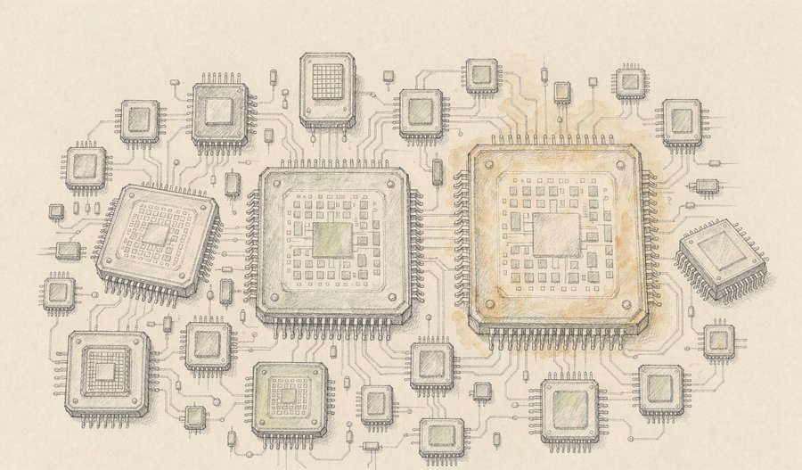
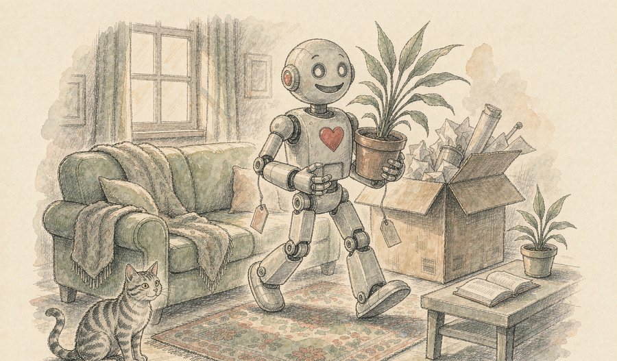
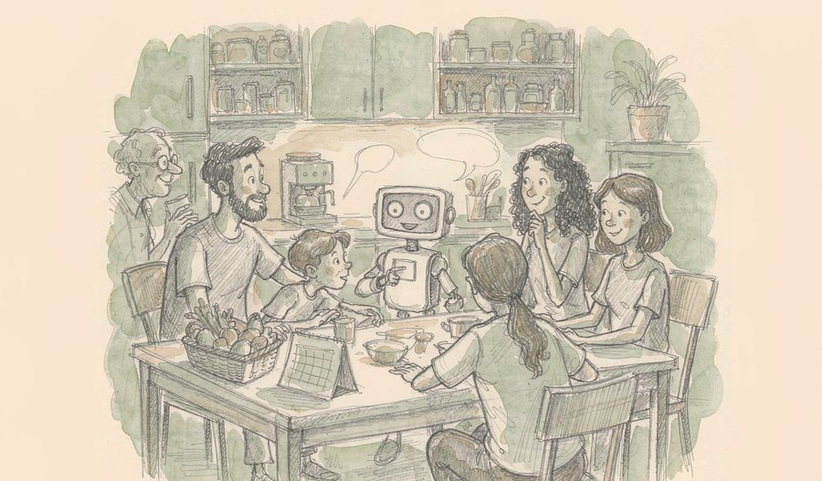
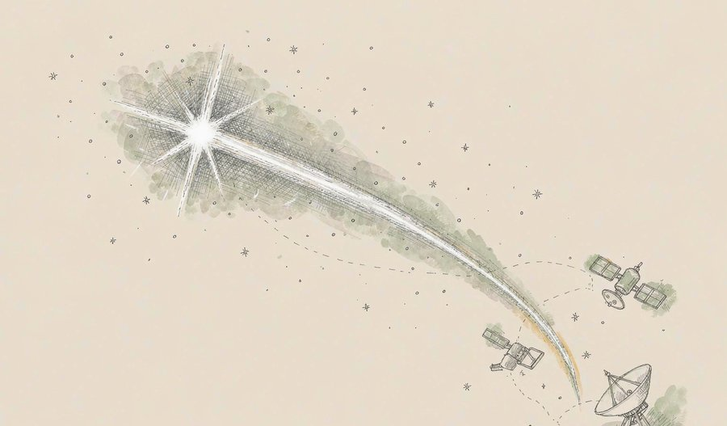
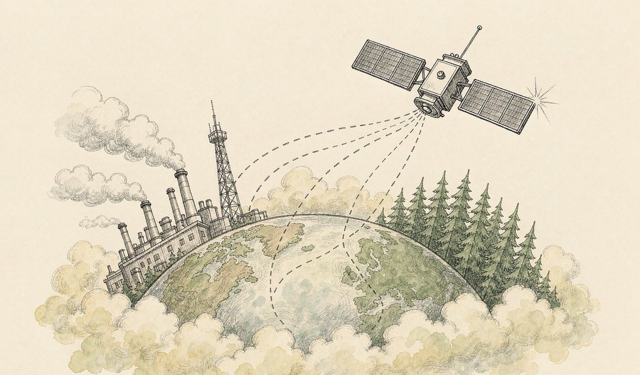
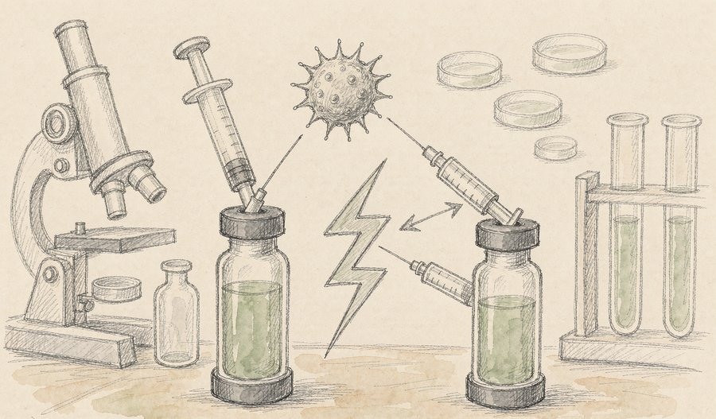
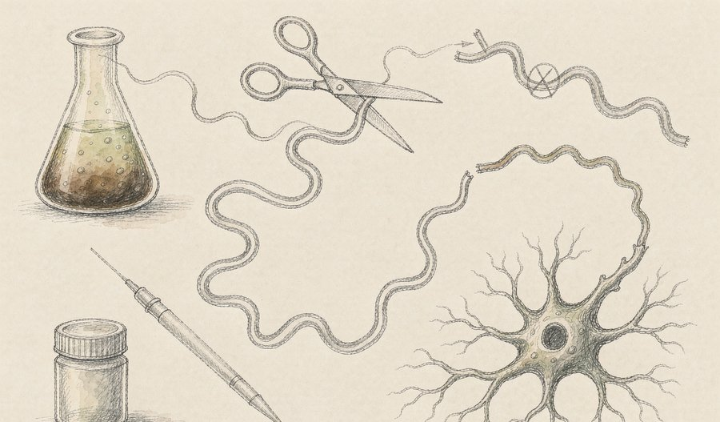
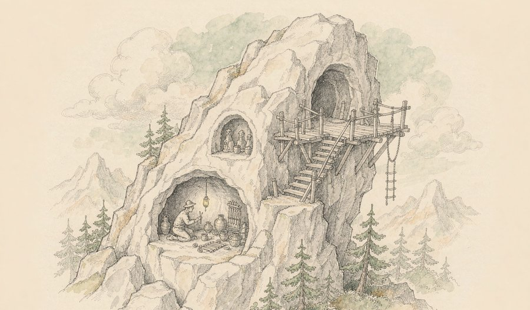
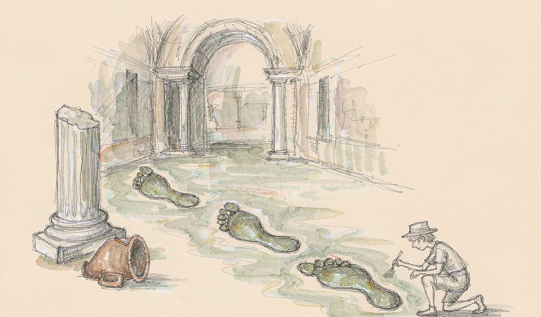
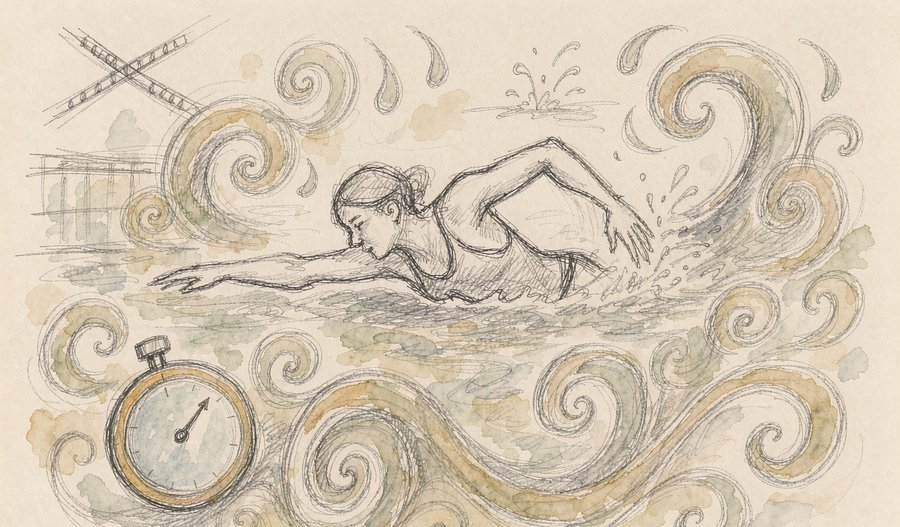

一颗国产芯片，性能翻了三倍。
今天的云栖大会上，平头哥把新一代AI芯片真武V900推到台前：216GB显存装进单颗芯片，上千颗芯片能像一颗「超级芯片」一样协同工作。这是国内自研算力底座迄今最响亮的一次亮相。
同样在最近几天，标价一万九千九的个人机器人正式开售，首批体验店开进了七座城市；谷歌的家庭管家助手升级到能同时照顾一家六口的日程。AI正从数据中心里走出来，一件一件搬进普通人的生活。
而在体育场上，一名13岁的中国女孩用2分06秒10告诉世界：纪录是用来被年轻人改写的。
今天的重头戏是算力：真武V900性能达到上一代的三倍，超节点集群可扩展到50万卡规模，阿里还首次公布了自研服务器CPU路线。算力这盘棋，从单芯片性能之战，正式打到了「算、存、网」全栈协同之战。
01

9月22日，在2026杭州云栖大会主论坛上，阿里平头哥发布新一代训推一体AI芯片真武V900，单芯片性能达上一代真武M890的三倍，计划2027年第一季度量产。芯片搭载216GB大容量显存，片间互联带宽1200GB/s，原生支持FP8、FP4低精度计算，覆盖万亿级参数大模型训练与推理全场景。配套的磐久超节点服务器集成自研互联、网卡与存储主控芯片，单一集群可扩展至50万卡规模。
观此：真正值得注意的是「全栈」两个字。芯片再快，如果数据在芯片之间搬运不动，算力就会被通信吃掉——真武V900搭配自研ICN Switch互联芯片，让上千颗芯片像一颗芯片一样工作，解决的就是这个老大难。平头哥同场还首次公开了倚天服务器CPU规划，2027年将推出倚天720、730两代产品，补上了数据中心最后一块自研拼图。Agent时代推理任务暴增，CPU与AI芯片的协同效率正成为新的竞争焦点。
来源：潮新闻
02

9月20日，消费级具身智能品牌启元机器人在上海发布并开售启元Q1、T1两款个人机器人，售价19999元起，10月1日起按订单顺序发货，首批授权体验店覆盖上海、广州、深圳等七城。公司引入汽车工业制造节拍，每2.5分钟下线一台机器人，装配数据全程可追溯。探索版与Pro版开放SDK和硬件拓展接口，支持全栈二次开发。
观此：两万元这个价位是标志性事件——此前人形机器人动辄几十上百万元，基本只活在实验室和展台上。把汽车产业的质量管理体系搬过来做机器人，「每2.5分钟下线一台」意味着量产爬坡已经启动，而不只是小批量作坊式生产。开放二次开发接口的思路也很聪明：先让机器人「有趣」好玩的门槛降下来，让开发者和玩家一起把它磨「有用」。个人机器人走进家庭的第一步，往往不是干活，而是被买回家。
来源：南方+客户端
03

9月21日，谷歌宣布其个人智能助理CC完成家庭化升级：它将拥有自己的经过验证的谷歌账号，最多可同时协调六位家庭成员，把全家共享的 Grocery 清单、家庭日历与每个人的私人日程分开管理。升级后CC能生成全家共享的晨间简报、代填请假表单、拟定一周菜单，但仍然不能替任何人付款或签署文件。该功能目前仅在美国上线，暂限成人使用。
观此：从「管理一个人的日程」到「协调一家人的生活」，看似只是一步小升级，实则戳中了家庭场景最真实的痛点——家里的事从来不是一个人的事。每个成员逐发件人授权共享范围的隐私设计也值得留意：家庭助手必须回答「我知道哪些、忘掉哪些」，否则没人敢把它请进门。它刻意保留的「不能付款、不能签字」边界，恰恰说明厂商清楚：信任要一层一层建立，代行动的权限得慢慢放。
来源：Google官方博客
04

9月21日，我国「天关」卫星与高海拔宇宙线观测站「拉索」的联合观测成果发表于《中国科学：物理学 力学 天文学》英文版：在距地球约4600光年的脉冲星PSR J1740+1000周围，发现一条长约42光年的X射线尾迹，是目前已知最长的X射线脉冲星风云尾迹。观测证实，高能粒子离开加速源后并非立刻向四面八方均匀扩散，而是能沿一定方向「定向奔袭」数十光年。
观此：宇宙线的起源与传播被称为天体物理「百年谜题」，过去学界只能假设粒子离开源头后就随机扩散——就像烟雾离开烟囱立刻散开。这条42光年的长尾第一次用观测证明：粒子更像一支有队形的行军队伍。更妙的是研究方法：X射线和伽马射线本是两种不相干的观测，拼在一起却能还原同一批粒子的旅程，这种「双剑合璧」为大科学装置联手攻关提供了范本。那些「找不到主人」的伽马射线源，也许从此有了新的解释思路。
来源：新华社
05

9月21日《中国科学报》报道，中国科学院大气物理研究所联合多家国内外单位，为我国下一代碳卫星TanSat-2研制出新方法与新系统，仿真观测显示可成功区分自然碳汇与人为碳排放，成果近日发表于《大气科学进展》。新方法将大气二氧化碳浓度与植物光合作用发出的叶绿素荧光信号放进同一个反演框架，理想条件下部分区域净初级生产力误差可降低约95%。
观此：过去碳卫星只能看到大气二氧化碳「余额」的变化，却分不清这份变化来自工厂烟囱还是森林生长——就像只看到账户总额，看不到收支明细。把植物光合作用的微弱「荧光信号」引入反演，等于给地球的碳账本装上了分类记账功能。这套误差评估框架还能反过来指导未来卫星怎么设计轨道、装什么仪器，属于「先在计算机里飞一遍」的省钱思路。对全球碳盘点而言，可核验的数据从来比承诺更稀缺。
来源：中国科学报
06

9月21日消息，成都高新区企业康诺亚自主研发的两款1类创新药CM529D1、CM583注射液获国家药监局临床试验批准。CM529D1是靶向DLL3/SEZ6的双抗ADC药物，拟用于小细胞肺癌等晚期恶性实体瘤，是该赛道全球首个进入临床阶段的产品；CM583为长效CGRP/PACAP双抗，拟用于成人偏头痛的预防性治疗。
观此：小细胞肺癌恶性程度高、治疗手段有限，全球同赛道在研产品屈指可数，双靶点加ADC「生物导弹」的组合思路，是把精准制导与高效杀伤绑在一枚药物上。偏头痛这条管线同样有看头：经典靶点CGRP药物只管减少发作频次，而PACAP是通路部分独立的新靶点，对现有药物无效的患者仍可能获益。一个攻肿瘤、一个攻慢病，背后是同一套抗体药物研发平台的两次输出——平台化研发正在成为中国创新药的主流打法。
来源：成都科技
07

9月14日，一项反义寡核苷酸RNA疗法治疗渐冻症的研究成果发表于期刊Med：一名由罕见CHCHD10基因突变致病的患者，在2024年4月至2025年4月间接受六次脊髓注射后症状改善并能继续工作，未出现严重副作用，首次给药一年后其血液神经丝轻链蛋白水平已降至正常参考范围。这是该疗法首例接受治疗的患者。
观此：渐冻症确诊后平均预期寿命仅约两至五年，现有治疗手段极为有限，任何「症状改善并继续工作」的病例都足以让整个领域精神一振。反义疗法的巧思在于它不改基因本身，而是用短链遗传物质去拦截基因产出的错误信使，从源头减少致病蛋白的合成——相当于不拆房子，只截住送错的设计图纸。研究者也保持了克制：单例结果无法确定能否阻止病程，但为约占患者百分之五到十的基因突变群体打开了治疗想象空间。
来源：中国科学报
08

近日，陕西省考古研究院与昭陵博物馆联合公布礼泉唐昭陵陵山考古成果：共确认九座开凿于山腰崖壁的石室，其中规模最大的ZLSS1石室坐北朝南、由墓道甬道墓室构成，出土石磬等宫廷礼仪用器，专家推测或为徐贤妃之墓；陵山东侧还发现两处石券窑，出土大量贞观时期陶俑陶马，推断为存放随葬器物的外置「便房」。
观此：这批发现妙在「补空白」——文献里昭陵「缘山傍岩，架梁为栈道」的记载，这次在崖壁上找到了四处栈道孔实证，纸面历史第一次落到了石头上。八座形制相近的小型石室被推断为高等级宫人墓葬，为解读初唐陵寝制度提供了罕见的实物坐标。石券窑「非墓而似墓」的功能认定也很有意思：唐代帝陵把随葬仓库修成窑洞、藏进陡坡，明器堆得满满当当却不设一具人骨，制度设计的讲究程度超出想象。
来源：陕视新闻
09

近日，考古团队在土耳其西南部穆拉省的斯特拉托尼凯亚古城罗马浴场发掘出三枚距今约1900年的孩童脚印。该城是全球规模最大的大理石建造古城之一，已列入联合国教科文组织世界遗产预备名录。本季冷水浴大厅发掘还清理出水池、壁龛及建筑坍塌后散落的屋顶构件。
观此：宏伟的神庙、大道与浴场讲述的是一座城市的雄心，而三枚小小的脚印讲述的是生活——某个孩子在近两千年前踮脚跑过尚未来得及硬化的地面，脚印就这样封存了下来。考古学最动人的部分往往不是王冠与铭文，而是这类「普通人的痕迹」：它让遗址从建筑史图谱变回有人气的地方。浴场附属健身区、更衣室、冷水浴大厅的完整布局，也让我们得以想象古罗马人「先运动、再搓澡、后社交」的一下午。
来源：环球考古资讯
10

9月21日，东京水上运动中心，2026年爱知·名古屋亚运会女子200米个人混合泳决赛，距14岁生日还有25天的于子迪以2分06秒10夺冠并刷新亚洲纪录，这是该项目历史第二好成绩，仅次于世界纪录保持者麦金托什的2分05秒70。这是她一年内第二次刷新亚洲纪录，队友余依婷摘得银牌。
观此：这条时间线值得细看：2025年11月她打破叶诗文尘封13年的亚洲纪录，2026年6月纪录一度易手，三个月后她再把纪录拉回自己名下——两个常在相邻泳道并肩训练的女孩，一年间把亚洲纪录整整提升了1秒47。后程「闭眼撑」的冲刺方式，展示的不只是天赋更是比赛气质。对手的存在从来不是坏事，正如余依婷所说：只有不断突破亚洲纪录，才敢去想世界纪录。2分06秒10与世界纪录之间只差0.4秒，这个距离，足够让人期待2028年。
来源：新浪新闻
算力竞争进入「拼全栈」的下半场。 今天云栖大会上真武V900的发布，表面看是一次性能迭代，实质是竞争维度的切换：单芯片参数的比拼正在让位于系统级协同的比拼。216GB显存解决「记忆常驻」，互联芯片解决「通信不拖算力后腿」，超节点把集群推到50万卡规模——这套组合拳说明，AI基础设施的评价标准已从「一颗芯片多快」变成「一整个数据中心能以多低成本持续产出多少高质量结果」。同样值得记住的是CPU被重新抬回牌桌：Agent时代工具调用与数据编排极其依赖处理器，这一年里几乎所有算力玩家都在补CPU与互联这一课。
AI落地的分水岭在「买得起」。 今天的另一条暗线是价格：两万元的个人机器人正式开售，十万元以内的教育级人形机器人批量上市，家庭助手开始协调一家六口的日常。此前具身智能讨论多停留在「能做什么」，当价签贴出来，「谁买得起、买回去干什么」就成了真问题。量产与场景数据是这个阶段的关键变量——机器人在真实家庭和工厂里跑出来的数据，会反过来训练下一代模型，「越用越强」的飞轮只有在产品真的到达用户手里之后才会转动。
科学与人文的共通之处：把「模糊的假设」变成「可核验的证据」。 42光年的X射线尾迹把宇宙线随机扩散的假设证伪，碳卫星新方法把「余额看不清去向」的碳账本记成明细，昭陵崖壁上的栈道孔把文献记载落成实物——这三个看似不相干的进展，做的是同一件事：让推断变成实证。这也是本期内容最想传递的一种气质：无论是仰望星空还是回望历史，可靠的知识都来自这种笨功夫。
一名距14岁生日还有25天的中国女孩，用2分06秒10游出了女子200米个人混合泳史上第二快的成绩——她一年内两次刷新亚洲纪录，而这个世界纪录保持者的年龄，也只比她大四岁。
今天的精选里，算力与机器人指向「AI走进现实」的同一条路径：一边把芯片做成系统，一边把系统做成商品。科学与健康板块共同呈现了证据的力量，从星际粒子到致病蛋白，都在被更精细的观测重新刻画。而游泳场上的少年提醒我们：纪录与认知一样，永远为下一次刷新留着位置。
本文插画由 AI 辅助绘制。